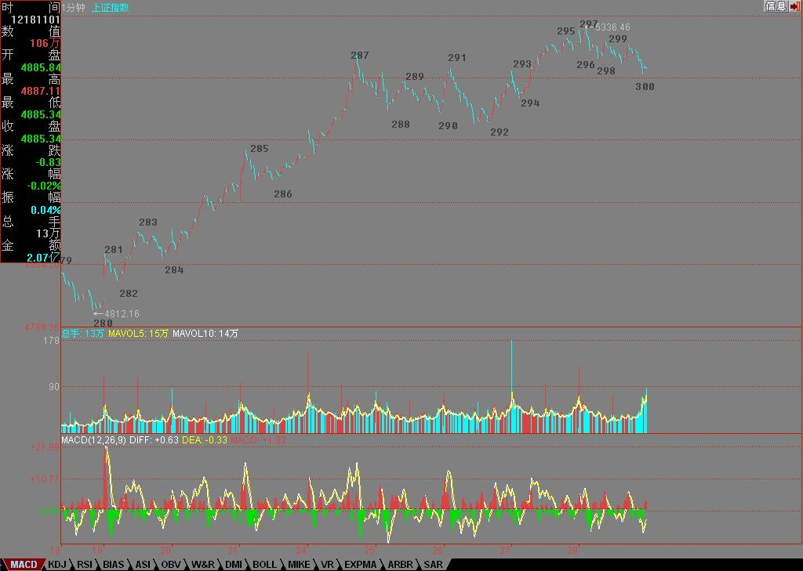

2007年低调收盘预示明年行情性格
2007/12/28 15:27:45
其实，这句话是有问题，今天指数虽然低调，但个股并不是都低调，例如本ID说那些股票，大多数就都继续在上攻。这也预示了明年的一个基本特征，指数油水不太大（除非期货很快出来），而个股油水不少。关于明年的分析，一早已经给出，请看“2008年行情展望 2007-12-20 15:59:05”
今天的大盘，技术上十分标准，就是第三买点后出现标准顶背驰，然后就使得走势从1分钟级别向5分钟扩展，现在，一个新的5分钟中枢已经形成，后面就看这5分钟中枢的震荡过程。
估计这次4800点上来的1分钟走势，虽然很标准，但也不一定都能分解对，下面有图，其中286、296是第一、二个中枢的第三类买卖点。297顶背驰后，最少跌回287下，这点已经完成，所以这5分钟中枢的扩展是逃不掉了。
下面的问题，很简单，就是这5分钟的走势类型究竟是一个上涨还是盘整，如果是上涨，这是第一个中枢。明年的第一个问题，就是这5分钟中枢的第三类买卖点问题。
明年，小心“井”，这就是本ID年末最好的忠告。
年末的功课，就是把“2008年行情展望 2007-12-20 15:59:05”提到的箱体给算出来，这是明年走势的一个基本框架指导。
去年年底有6元的000999，今年下半年有8元的600737当各位的学费，但现在没有，因为明年的行情，本ID的原则是把该原有的完成了，新的没有什么好选择，毕竟明年不是前两年，土都耕种了两三年，明年能收割好就是真本事，后面，是该施肥增加肥力的时候了。
说一句有点恶心的话，资本市场里最好的肥料，就是人。这话恶心，却是真相与事实，关键是，不要把自己当成了肥料。
为了让各位不至于成为肥料，明年指数无论到什么地方，这里只有绿色，就是让各位时刻提醒自己，至少可以知道，如果当了肥料，就见不到新苗了。
先下，再见。
注意，下面的300并不是已经完成的。
